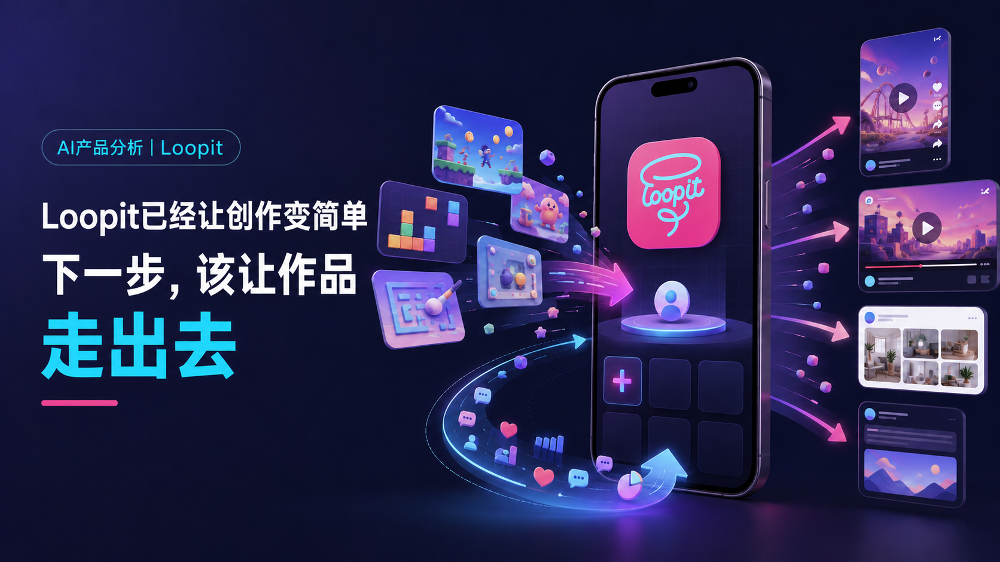
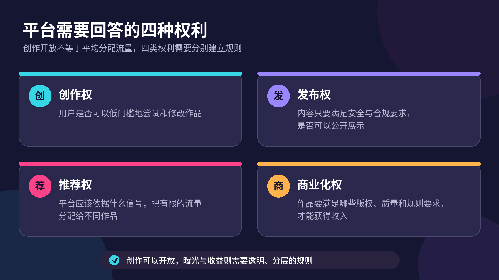
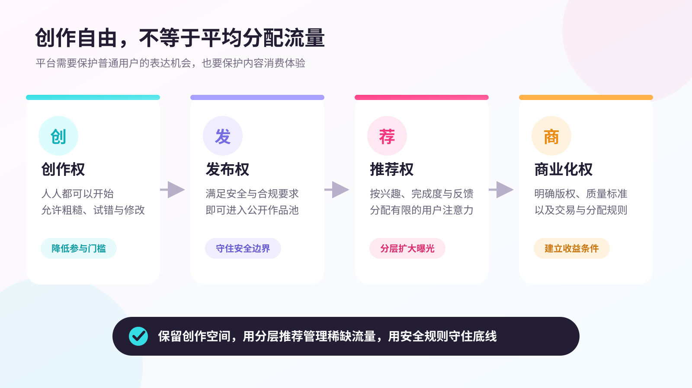
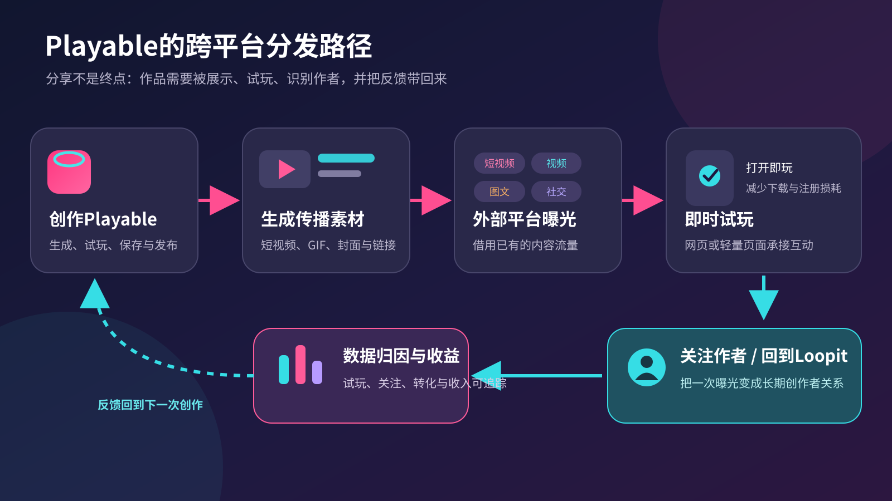
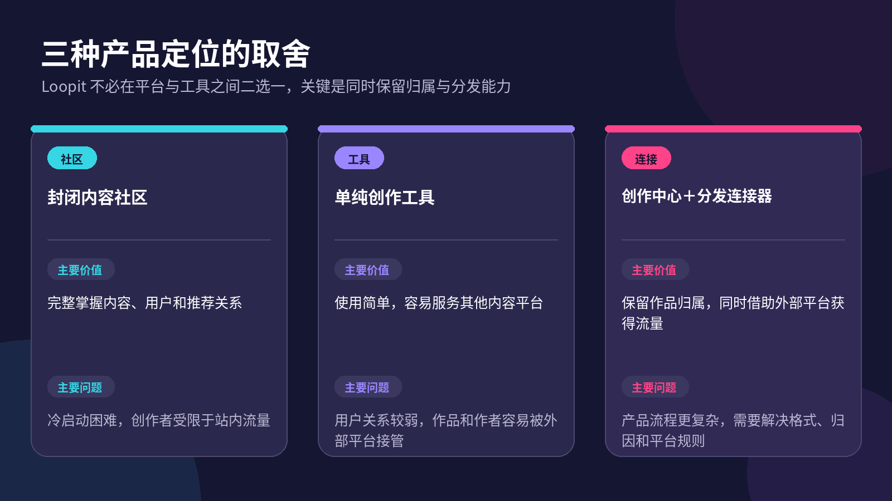

Loopit 以 AI 生成互动作品为切入点，降低了创作门槛，但下载量超500万后，社区活跃度仍存疑。本文从创作者循环、内容治理到跨平台分发，剖析其从工具走向平台的挑战，并提出连接器定位的破局思路。

在浏览Loopit之前，我对AI游戏创作产品的关注点一直很直接：它能不能把一句话变成一个实际可玩的作品？
Loopit确实给出了一个很有吸引力的答案。它把用户创作的内容称为Playable，也就是一种可以点击、滑动、摇晃，甚至通过声音参与的互动作品。用户不需要掌握代码，只要描述想法，AI就会尝试生成画面、逻辑和交互。
但连续试玩和浏览了一段时间后，我关注的问题变了。
我没有完成作品发布，因为当时的发布流程需要邀请码；在产品中，我也没有看到明确的创作者收益、赞赏或分成入口。从我浏览的推荐作品来看，社区也没有给我一种大量创作者持续更新、相互反馈的活跃感。当然，这只是我的产品体验，不能直接等同于Loopit真实的活跃用户数据。Google Play页面目前显示其下载量已经超过500万，至少说明它已经获得了一定范围的传播。
这让我产生了一个疑问：为什么下载量已经不算低，社区仍然可能让人产生创作者数量有限的体感？
我目前更倾向于认为，Loopit下一步最需要解决的，不只是继续提高生成质量或丰富站内信息流，而是帮助作品走出Loopit，进入抖音、YouTube、小红书、X等已经拥有大量用户的内容平台，再把曝光、反馈和收益带回创作者身边。
01 Loopit做的，不只是“AI生成小游戏”
如果把Loopit理解成一个AI小游戏生成器，它的产品逻辑并不复杂：用户输入一句描述，AI生成一个可以运行的小游戏，用户试玩，觉得不好就继续修改。
但Loopit显然不只想做到这里。
按照官方应用页面的介绍，Playable不只是小游戏，还可以是互动梗图、ASMR玩具、益智内容、模拟器和互动艺术。它与图片和视频最大的区别，是用户不再只负责观看，而是要通过点击、滑动、倾斜手机、声音等方式改变内容。
Loopit还加入了信息流、关注、收藏和Remix。用户看到一个有意思的作品后，可以在原作品基础上修改规则、替换画面或者改变交互，让它成为一个新的作品。原作者提供的不是一个只能被消费的结果，也可能成为下一次创作的起点。
这套设计已经超出了普通生成工具的范围。生成工具主要解决“能不能做出来”，内容平台还要回答另外几个问题：作品发布后谁能看见，作者怎样获得反馈，优秀创作者为什么愿意留下，平台又如何让创作行为持续发生。
这也是为什么，我不太想把Loopit的产品问题简单归结为“AI生成效果还不够好”。生成质量当然重要。一个无法正常运行、交互逻辑混乱的Playable，很难获得用户认可。但如果一款产品希望成为创作者平台，作品生成成功只是起点。
工具的价值，往往结束在结果出现的那一刻；创作者平台的价值，却要从这一刻才开始。
02 当创作变简单，新的门槛出现在哪里
过去做一个可以交互的小游戏，创作者至少需要理解代码、引擎、素材和测试。Loopit把其中很多工作交给AI，用户只需要描述想法，就有机会得到一个可以试玩的结果。
从应用商店评价也能看出这种价值。一些用户喜欢它，正是因为自己一直想做游戏，却不理解复杂的代码和开发流程。另一些用户则提到，当作品变得复杂以后，AI可能误解需求、生成错误的模型，或者让游戏出现Bug。
这说明Loopit还需要继续提高生成能力，但也说明它确实降低了“做出第一个作品”的门槛。
问题在于，创作门槛降低后，创作者并不会因此自动获得持续创作的动力。
一个相对完整的创作者循环，至少包含五个环节：
- 把想法做成作品；
- 将作品发布出去；
- 获得播放、互动和用户反馈；
- 积累稳定的受众与个人影响力；
- 通过作品获得收入或其他可感知的回报。
Loopit已经明显降低了第一个环节的难度，也建立了站内发布、浏览和Remix机制。但从我的体验来看，后面几个环节还没有形成足够强的存在感。
这里需要区分两个容易混在一起的指标：下载量与创作者生态。
500万以上下载可以证明产品获得了传播，却不能直接证明有多少用户持续试玩，有多少人创作并发布作品，更不能证明优秀作者能够稳定获得关注。目前我也没有找到Loopit公开披露的活跃创作者数量、作品曝光分布和创作者留存数据。因此，文章不能武断地说Loopit用户很少，但可以提出一个值得验证的产品假设：它的下载规模，可能还没有完全转化为创作者能够感知的有效反馈。
对创作者来说，作品被生成出来是一种短暂的兴奋；有人试玩、有人讨论、有人期待下一部作品，才是更持久的动力。如果平台只能不断降低创作成本，却没有同步扩大作品的有效分发，那么内容只会越来越多，创作者却未必越来越稳定。
03 低质量作品，需要被平台清除吗？
谈到创作者平台，一个很自然的建议是：过滤低质量内容，把流量集中给优秀作品。
但我并不完全认同这种做法。
Loopit降低创作门槛的意义，本来就是让不会编程、不会设计的人也能把想法做出来。一个刚开始尝试的用户，作品粗糙、规则简单，甚至有些笨拙，都很正常。如果平台只愿意保留成熟作品，那么所谓“人人都能创作”，最后很可能变成“人人都能生成，但只有少数人配被看见”。
低质量作品并不一定要被删除。它也是社区生态的一部分，代表普通用户正在学习、试错和表达。平台过早追求整齐的精品内容，可能会让新用户在第一次创作后就失去继续尝试的空间。
不过，允许每个人创作，不等于让每个作品获得相同的推荐流量。这里需要区分四种权利：

发布入口可以开放，用户的注意力却始终有限。
因此，Loopit可以保留普通作品的发布空间，同时用完成度、原创性、互动数据、用户兴趣和负面反馈决定推荐范围。对于刚发布的实验作品，可以进入“最新”“实验”或更细分的兴趣频道；对于已经获得良好反馈的作品，再逐步扩大推荐。这样既不会剥夺普通用户的创作机会，也不会让主信息流被大量无法正常运行的内容占满。
当然，创作自由存在明确边界。违规、侵权、欺骗、恶意内容和安全风险不能被包装成“低质量作品的一部分”。Loopit的服务条款也保留了监测和删除违规内容的权利。平台需要保护的是普通人的创作机会，而不是取消内容治理。

04 一个Playable，怎样走出Loopit
如果Loopit想帮助创作者连接外部平台，首先要处理内容格式的差异。
一张图片可以直接发到小红书和X，一段视频可以同时出现在抖音和YouTube。但Playable的价值来自实时交互。用户需要点击、滑动、摇晃或者发出声音，内容才会产生变化。把它录成一段视频以后，外部用户虽然能看到发生了什么，却失去了亲手参与的部分。
所以，仅仅增加一个分享按钮，仍然解决不了跨平台分发问题。
我认为Loopit至少需要把一个Playable拆成四种可以传播的产品能力。
第一，自动生成适合外部平台的展示素材。创作者完成作品后，系统可以选择最能体现玩法的几个瞬间，生成竖屏短视频、GIF或封面。这些素材负责展示玩法，让外部用户产生亲自试玩的兴趣。
第二，提供低门槛的即时试玩。用户从外部平台点击链接后，最好能在网页或轻量页面中快速体验核心玩法，而不是先下载应用、注册账号，再重新寻找作品。每增加一步，外部流量都会损失一部分。
第三，保留作者归属。外部展示素材、试玩页面和后续Remix都应该清楚标明原作者，让一次传播同时增加创作者的个人影响力，而不只增加Loopit的品牌曝光。
第四，把数据带回来。创作者需要知道作品在不同平台获得了多少展示、多少点击、多少有效试玩，又有多少用户因此关注自己。没有数据归因，所谓“作品走出去”仍然只是把链接发出去。

抖音、YouTube、小红书和X不只是Loopit争夺用户时长时面对的竞争对手，也可以成为作品的分发渠道。Loopit没有必要在早期就独自教育所有用户接受一种新的互动内容形式。它可以先借助用户已经熟悉的平台，让他们看到Playable，再把完整的互动体验承接回来。
05 Loopit该做平台，还是做连接器？
让作品走向外部，很容易引出一个反对意见：如果创作者和用户都去了其他平台，Loopit自己的社区还剩下什么？
这个问题确实成立。Loopit不能只做一个生成完作品就把用户送走的工具。否则，作者关系、用户数据和商业价值最终都可能留在外部平台，Loopit只承担最昂贵的AI生成成本。
但这并不意味着它必须把所有行为都锁在站内。平台和连接器不是只能二选一。

我更看好第三种定位。
Loopit自己的平台仍然很重要。它可以承担作品生成、试玩、保存、Remix、版本关系、创作者主页和互动内容推荐。优秀作品也应该在Loopit内部被持续展示，让用户可以直接发现有意思的内容。
外部平台则承担更大范围的曝光和获客。一个作品在小红书被讨论，在抖音形成模仿，在YouTube获得演示播放，最后都可以指向同一个Playable和同一名创作者。
从产品优先级来看，Loopit可以分三步推进。
第一步是降低创作者进入门槛，并解释必要的限制。在我的体验中，发布需要邀请码。邀请码可能是为了控制生成成本、内容安全或测试规模，但它与官方强调的“Free to Create”“No Limits”之间存在体验上的落差。如果邀请制仍然必要，平台至少应该清楚告诉用户为什么需要、如何获得、预计等待多久，而不是让创作兴趣停在门外。
第二步是把现有分享能力升级为分发工具，包括自动生成展示视频、快速试玩链接、作者标识和跨平台数据面板。衡量它的指标不只是分享次数，而应该包括外部点击率、试玩完成率、关注转化率和创作者复投率。
第三步才是扩大站内精品内容消费。Loopit可以把外部平台验证过的兴趣和互动数据带回推荐系统，让优秀作品获得更精准的曝光，同时保留新创作者的实验空间。
外部分发也可以成为Loopit建设自身平台的一部分。它不必先把一座城市建完，再等待创作者搬进来；可以先修路，让作品和用户能够进出。
06 让创作者赚钱，不能只停在“更多曝光”
作品获得更多曝光，确实可能让创作者更有动力，但曝光本身并不等于收入。
我在体验中没有看到明确的创作者收益、赞赏或分成功能。Google Play页面标注了应用内购买，但这只能说明产品存在付费项目，不能证明创作者已经能够从作品中获得分成。
Loopit当前服务条款还存在一个值得注意的地方：用户保留自己内容的所有权，平台允许其他用户在标明原作者的前提下Remix；但条款同时把应用和服务的使用许可限定为私人、非商业用途。这并不意味着Loopit以后不能商业化，却说明如果平台希望创作者通过作品赚钱，商业使用范围、授权关系和收益规则都需要进一步明确。
创作者商业化至少需要三层基础。
第一层是身份和归属。平台必须知道一个作品最初由谁创建，后续Remix贡献了什么，外部传播应该把关注带给谁。
第二层是数据和价值。品牌、用户和平台需要看到作品获得了多少有效试玩、互动和转化，而不是只看一段展示视频的播放量。
第三层才是交易。Loopit可以探索品牌定制Playable、付费模板与素材、用户赞赏、创作者订阅或广告分成，但不同模式对应的产品成本并不相同。品牌合作需要交付和审核能力，模板交易需要版权与质量标准，广告分成则需要足够稳定的流量。
因此，商业化不应该被写成“给每个作者增加一个赚钱按钮”。更现实的顺序是：先让作品获得可追踪的外部流量，再建立创作者身份与数据面板，最后选择最适合互动内容的交易方式。
当创作者能够明确看到，自己的一个想法带来了多少试玩、多少关注，甚至多少真实收入，持续创作才不只是依赖最初的新鲜感。
结语
最开始，我容易把Loopit的问题归结为平台还不够大、产品还不够完善。继续拆解以后，我发现这个判断过于笼统。
Loopit已经证明了一件重要的事：AI可以让原本不会编程的人，也有机会做出可以互动的作品。它甚至已经通过信息流和Remix，搭出了一个创作者社区的基本形状。
但创作者平台不能只用生成了多少作品来衡量自己。作品有没有被看见，作者有没有获得可以理解的反馈，优秀创作者能否建立自己的受众，这些问题会逐渐比“能不能再生成一个小游戏”更重要。
所以，我仍然认为Loopit应该拥有自己的平台，让用户在里面发现、试玩和Remix优秀作品。但它更应该主动连接抖音、YouTube、小红书、X等外部平台，让Playable借助已有的流量被更多人看见，再把作者、数据和收益带回来。
当AI让每个人都能创作之后，平台需要证明的是，它能不能让创作者因为这些作品走得更远。
这也留下了一个值得继续观察的产品选择：Loopit下一阶段应该优先把用户留在自己的信息流里，还是先帮助创作者去更大的市场证明作品的价值？